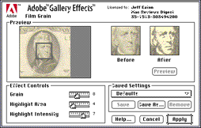
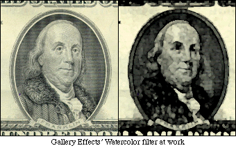

Adobe Gallery Effects, Vol. 1-3
Adobe Gallery Effects, Vol. 1-3

Pros: Amazing variety of special effects; streamlined, though sometimes confusing, interface; filters take advantage of Photoshop 3 layers; "Lens Effects" filter is, easily, one of the most useful innovations in years
Cons: Interface, while effective, is decidedly non-standard; "avante garde" effects may be less than useful for some artists
Adobe Gallery Effects, Vol. 1-3
Pros: Good, solid collection of stock filters; each filter can produce a variety of effects with tweaks to default settings
Cons: Not quite as awe-inspiring as KPT; Some effects have been overused; effects previews are tiny, and offer no zooming
Years ago, when having a color monitor was a Big Deal, Photoshop plugins were few and far between -- niche toys for high-end graphics gurus. Now, one can hardly turn around without seeing a new program that supports Photoshop's plugin format. With this new mainstream support, filters are proliferating, and professionals and hobbyists alike enjoy their help. The two "grand-daddies" of the filter field, both popular and long-lived, are Adobe Gallery Effects and Kai's Power Tools. While they've taken different approaches, they both offer valuable tools for artists.
 Adobe Gallery Effects is actually a collection of three distinct filter "packs" which can be purchased individualy or as a group. For the purpose of this review, I'll be treating them as one entity -- although each package offers its own emphasis (classical art, special effects, etc) they all share the same interface and approach to filtering.
Gallery Effects filters focus on tranforming an image into different "styles." Though there's no single standout filter in the collection, all 45 plug-ins add up to an extremely useful package. The "classical" filters mimic artistic effects like watercolors, pastels, mosaic images, etc. Others make an image look like it's been photocopied, embossed into note paper, hammered into chrome, or projected onto textured paper.
Each filter includes numerous controls for customizing the effect; using different color combinations and settings, a single filter like Neon Glow, Photocopy, or Spattered Edge can create a wide variation of effects. Since each of the 45 GE filters shares the same interface, it's also easy to get working quickly.
 Obviously, using such effects alone on an image can result in a cookie cutter look that shouts, "I used filters!" Some of Gallery Effect's filters, notably Mosaic, have been overused. However, the flexibility of each of the filters makes such one-shot applications a waste of the collection's potential. When used as part of an overall design, the effects can be invaluable additions to a Photoshop users' arsenal. From the get-go, Kai's Power Tools is a wild contrast to Gallery Effects. Where GE's interface is all business, Kai's is an imaginative journey into the mind of Kai Kruse, its designer. While some see its organic feel is a marvel of intuitive interface design, others say it's a nonstandard eyesore. I fall into the former group -- KPT's unique layout allows fast, effortless work once you're used to it.
 KPT collection offers three basic types of filters; one-shot effects that create wild variations on an image, "creation" filters that generate new textures and images, and traditional effects like blurring, sharpening, and diffusion with a unique twist.
KPT collection offers three basic types of filters; one-shot effects that create wild variations on an image, "creation" filters that generate new textures and images, and traditional effects like blurring, sharpening, and diffusion with a unique twist.
Easily, the most innovative element of Kai's Power Tools is the "Lens Effects" filter. While most Photoshop plug-ins provide a small "preview" area to see the results of a filter on an image, the Lens Effects filter takes the entire screen for a preview, and puts a special "looking glass" on top of the image. Imagine looking through a jeweler's loupe and seeing the results of a filter displayed in real time as you drag it around. Streamlined and handy beyond description, this innovation is worth the price of admission alone. Unfortunately, it requires a fast PowerMac and plenty of RAM to be used at a reasonable speed.
KPT's "one-shot" filters offer special video effects (and the occasional near-useless gizmo that's just fun to tinker with). Imagine sticking your image into a piece of tile, covering a floor with said tiles, and creating a perspective picture of it; that's KPT's Tiling filter. Glass Lens distortion gives "magnifying glass" look, with control over highlights on the glass. KPT's contribution to the world of Overused Effects is the Page Curl filter. Since its release in version 2.0 of the KPT package, images with curled-back corners have appeared on more magazines, product boxes, and advertisements than I care to mention.
 Rounding out the collection are KPT's Gradient Designer, Texture Explorer, and Spheroid Designer. The Gradient designer can create amazingly flexible frames, borders, blends, etc. The Texture Explorer creates endless varioations of textures, invaluable for those who need backgrounds for multimedia projects, etc. The Spheroid Designer, while impressive looking, seemed less useful. By allowing users to create rendered spheres in Photoshop, it opens up new worlds of eyeballs, floating planets, and oranges, but practical applications elude me.
Rounding out the collection are KPT's Gradient Designer, Texture Explorer, and Spheroid Designer. The Gradient designer can create amazingly flexible frames, borders, blends, etc. The Texture Explorer creates endless varioations of textures, invaluable for those who need backgrounds for multimedia projects, etc. The Spheroid Designer, while impressive looking, seemed less useful. By allowing users to create rendered spheres in Photoshop, it opens up new worlds of eyeballs, floating planets, and oranges, but practical applications elude me.
Every KPT filter can be set to various levels of opacity, and graphics modes. Impressive effects can be created by applying a filter to another image using the colorize, difference, or lighten graphics modes. While some KPT filters can serve as quick 'n easy tools, the package is more of a digital springboard for artists. Look at it in that way, and you'll be prepared to make the most of this unique and innovative package.
Comparing Kai's Power Tools and Adobe Gallery Effects is a difficult task -- they take vastly different approaches, and appeal to users with different needs. If you're an original artist who focuses on the creative process and enjoys "brainstorming" on the screen, you'll love KPT. If you need a solid collection of special effects tools that are flexible, but don't require any fiddling to use, Gallery Effects may be the right choice. Ideally, get both -- like many graphics tools, they compliment each other well.
![[ Back to Main Page ]](../pics/mainbutton.gif)
![[ Back to Reviews Page ]](../pics/reviewsbutton.gif)
![[ About Mac Reviews Digest ]](../pics/aboutbutton.gif)